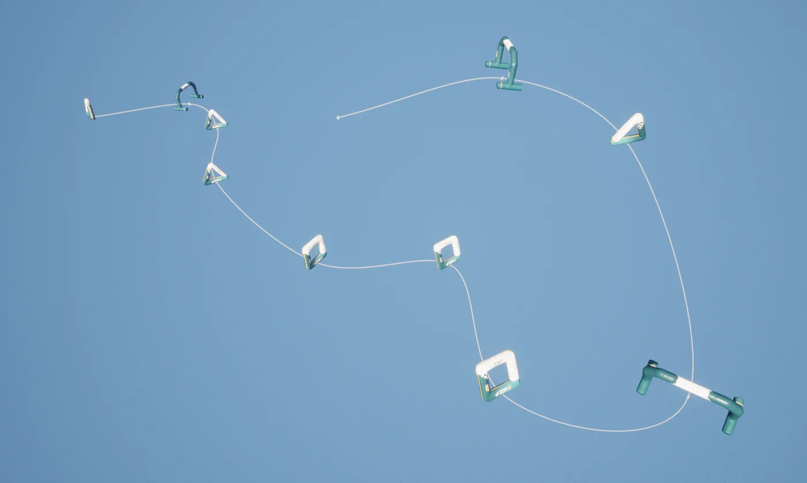
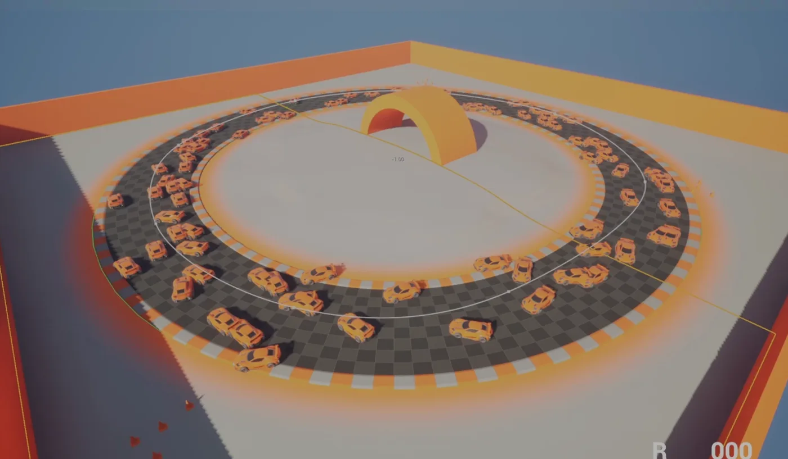
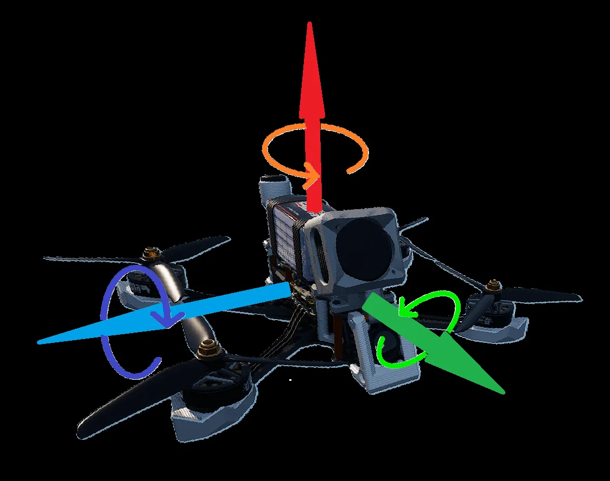
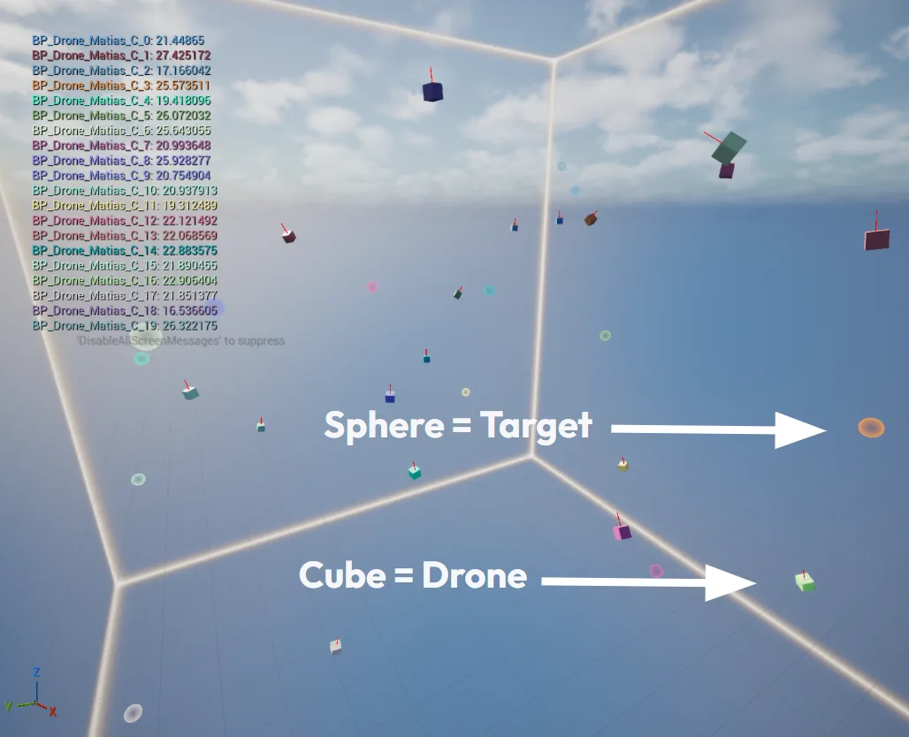
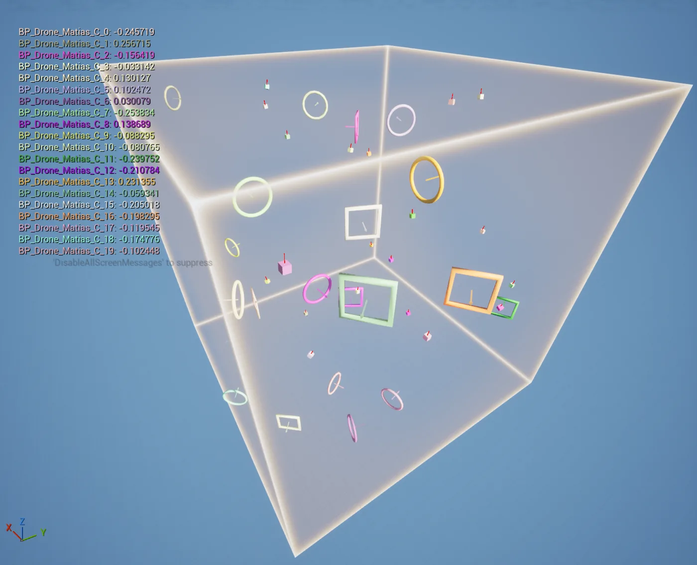
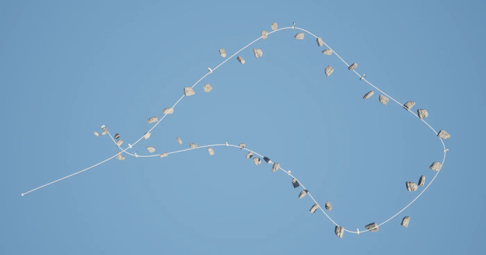
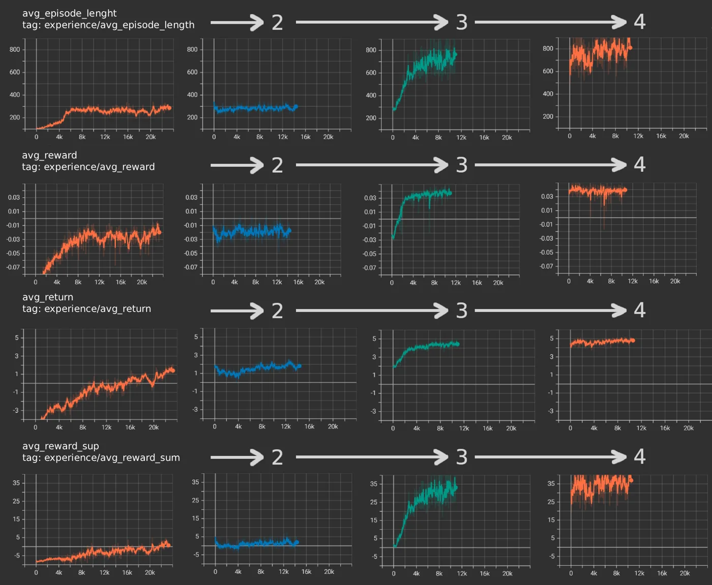

AI Drone Flight
Apprendre à une IA à piloter un drone FPV de course avec la vraie physique de TrypFPV, sur des pistes qu'elle n'a jamais vues.
Teaching an AI to fly an FPV racing drone with TrypFPV's real physics, on tracks it has never seen.

- ContexteContext
- Mémoire de fin d'études ISART, avec Undead BatteryISART master's thesis, with Undead Battery
- PériodeDates
- oct. 2025 – juin 2026Oct 2025 – Jun 2026
- ÉquipeTeam
- Antoine Mordant, Lenny Rabinne, Matias Heno
- Mon rôleMy role
- Intégration dans TrypFPV, courses procédurales, agent avec obstaclesTrypFPV integration, procedural tracks, obstacle agent
- RésultatOutcome
- Deux agents intégrés dans un build interne de TrypFPVTwo agents integrated into an internal TrypFPV build
Les fondations, puis l'agent avec obstaclesThe foundations, then the obstacle agent
-
01
Le premier socleThe first foundation
J'ai monté le projet Unreal de départ avec Learning Agents, sur lequel l'équipe a démarré. J'y ai codé un drone simplifié qui reprend les commandes de TrypFPV.
I set up the starting Unreal project with Learning Agents, which the team built on. In it, I wrote a simplified drone using TrypFPV's controls.
-
02
La passerelle vers TrypFPVThe bridge into TrypFPV
J'ai installé Learning Agents dans le projet UE5 de TrypFPV et créé le plugin qui a transporté notre travail entre les deux projets pendant tout le mémoire.
I installed Learning Agents in TrypFPV's UE5 project and created the plugin that carried our work between the two projects throughout the thesis.
-
03
Les courses procéduralesProcedural tracks
Une spline aléatoire, des portes de formes variées (carrées, triangulaires, rondes…) sur ses points, et des obstacles entre eux en option. Avec des classes enfants des drones pour ne pas perturber le projet du studio.
A random spline, gates of various shapes (square, triangular, round…) on its points, and optional obstacles in between. Built on child classes of the drones so the studio's project stayed untouched.
-
04
L'agent qui évite les obstaclesThe obstacle-avoiding agent
J'ai entraîné le réseau qui pilote en tenant compte des obstacles et des collisions : celui de la piste avancée, qui termine 79 % de ses courses.
I trained the network that flies around obstacles and handles collisions: the advanced-track agent, which completes 79% of its races.
Des adversaires IA qui volent comme de vrais pilotesAI opponents that fly like real pilots
Undead Battery voulait savoir si une IA pouvait piloter dans TrypFPV, un simulateur réputé pour sa physique de vol réaliste. Un drone FPV, c'est quatre commandes en continu (gaz, roulis, tangage, lacet), une grande vitesse et aucune aide au pilotage.
Undead Battery wanted to know whether an AI could fly in TrypFPV, a simulator known for its realistic flight physics. An FPV drone means four continuous inputs (throttle, roll, pitch, yaw), high speed and no flight assistance.
Des chercheurs ont déjà battu des champions humains avec une IA (Kaufmann et al., Nature, 2023), mais sur une seule piste apprise par cœur. Notre objectif : une IA qui généralise à des pistes inconnues, avec obstacles, sans simplifier la physique.
Researchers have already beaten human champions with AI (Kaufmann et al., Nature, 2023), but on a single, memorised track. Our goal: an AI that generalises to unknown tracks with obstacles, without simplifying the physics.
CE QUE L'IA PERÇOITWHAT THE AI SENSES
- Porte actuelle et suivante : distance, direction, orientation
- Current and next gate: distance, direction, orientation
- Vitesse du drone et gyroscope
- Drone velocity and gyroscope
- 13 rayons : 5 directions et deux cônes de 6 rayons, inclinés à 45°
- 13 raycasts: 5 directions and two cones of 6 rays, tilted 45°
CE QU'ELLE DÉCIDEWHAT IT DECIDES
- Un réseau entraîné avec PPO via le plugin Learning Agents
- A network trained with PPO through the Learning Agents plugin
- Toutes les quelques millisecondes : gaz, roulis, tangage, lacet
- Every few milliseconds: throttle, roll, pitch, yaw
CE QUI LA GUIDEWHAT GUIDES IT
- + voler vers la porte, d'autant plus viteflying toward the gate, more so when fast
- +1 porte franchie, bonus si rapidegate passed, bonus if quick
- +2 course terminée, bonus si rapiderace finished, bonus if quick
- −0,1−0.1 chaque collisioneach collision
- −5 trop loin de la pistetoo far from the track
Du plus simple au plus réaliste, en six étapesFrom simple to realistic, in six steps
-

Mon travailMy workPrise en main en 2DGetting started in 2D
Une voiture apprend à suivre une spline, pour maîtriser Learning Agents : observations, actions, sauvegarde et reprise d'entraînement.
A car learns to follow a spline, to get to grips with Learning Agents: observations, actions, saving and resuming training.
-

Mon travailMy workUn drone simplifié en 3DA simplified 3D drone
Une seule force verticale au lieu de quatre hélices, mais les vraies commandes FPV, pour que l'apprentissage reste transférable.
A single vertical force instead of four propellers, but real FPV controls, so the learning stays transferable.
-

Atteindre une cible au hasardReaching a random target
Plus de chemin tracé : le drone doit trouver sa trajectoire seul. Une vingtaine d'agents s'entraînent en parallèle.
No more predefined path: the drone must find its own way. About twenty agents train in parallel.
-

Passer des portesFlying through gates
La porte devient à la fois cible et obstacle. Nous avons cherché le bon nombre de rayons : assez pour voir, pas trop pour apprendre vite.
The gate becomes both a target and an obstacle. We tuned the number of raycasts: enough to see, few enough to learn fast.
-
Plugin UE5 branché sur TrypFPVUE5 plugin plugged into TrypFPVMon travailMy work
Passage à la vraie physiqueSwitching to real physics
Tout le système d'entraînement est emballé dans un plugin Unreal, intégré à TrypFPV sans toucher à son architecture.
The whole training system is packaged as an Unreal plugin, integrated into TrypFPV without touching its architecture.
-

Mon travailMy workDes courses complètes, puis des obstaclesFull races, then obstacles
Une suite de portes générée à chaque épisode, puis des obstacles le long du parcours : le scénario le plus proche d'une vraie course.
A new sequence of gates every episode, then obstacles along the way: the closest scenario to a real race.
Quand l'IA apprend enfin à tournerWhen the AI finally learns to turn
Sur la piste complète, l'agent plafonne vite : il fonce vers la première porte puis n'arrive pas à se réorienter vers la suivante. Une deuxième session d'entraînement ne change presque rien.
On the full track, the agent quickly plateaus: it rushes the first gate, then can't turn toward the next one. A second training session barely changes anything.
À la troisième session, il trouve une stratégie pour pivoter vers la porte suivante et finit des courses entières. Une quatrième session sert de réglage fin.
In the third session, it finds a way to pivot toward the next gate and completes whole races. A fourth session is used for fine-tuning.

200 essais par agent, face à un champion200 runs per agent, against a champion
Sur piste simple, l'IA fait 30,0 s au mieux. Avec obstacles, elle subit 430 collisions en moyenne : c'est ce qui la ralentit.
On the simple track, the AI's best run is 30.0 s. With obstacles, it averages 430 collisions, which is what slows it down.
Ce que je changeraisWhat I would change
Percevoir plus viteFaster perception
Les rayons sont répartis sur trois frames pour économiser du calcul. À pleine vitesse, ce retard suffit à provoquer des collisions. Piste : un cône plus dense, ou apprendre directement depuis l'image de la caméra FPV.
Raycasts are spread over three frames to save CPU time. At full speed, that delay is enough to cause crashes. Next: a denser cone, or learning straight from the FPV camera feed.
Une récompense plus stableA steadier reward
Pistes et obstacles aléatoires rendent le signal très bruité. Piste : pénaliser l'approche d'un obstacle avant le choc, pas seulement le choc.
Random tracks and obstacles make the signal very noisy. Next: penalise getting close to an obstacle before the crash, not only the crash itself.
Donner une mémoireAdd memory
Un réseau récurrent (LSTM) garderait en tête la trajectoire récente, utile pour anticiper les virages serrés et les obstacles cachés.
A recurrent network (LSTM) would remember the recent trajectory, which helps anticipate sharp turns and hidden obstacles.